01 · Vocabulary — uncanny
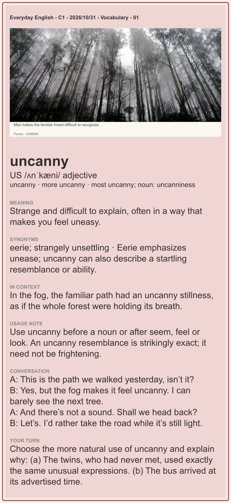
Reveal model answer
(a). Their unexpectedly exact similarity is difficult to explain. A bus arriving on schedule is ordinary, so uncanny would usually be inappropriate.
Download PNG with model answer · Photo source
02 · Vocabulary — commemoration
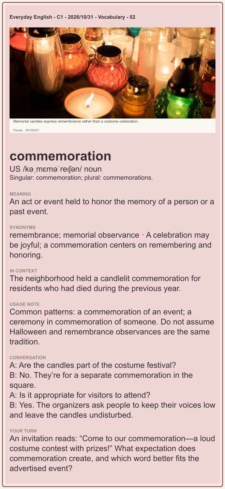
Reveal model answer
Commemoration suggests honoring a person or past event. Celebration or party better fits the costume contest, unless remembrance is genuinely its purpose.
Download PNG with model answer · Photo source
03 · Phrasal verb — factor in
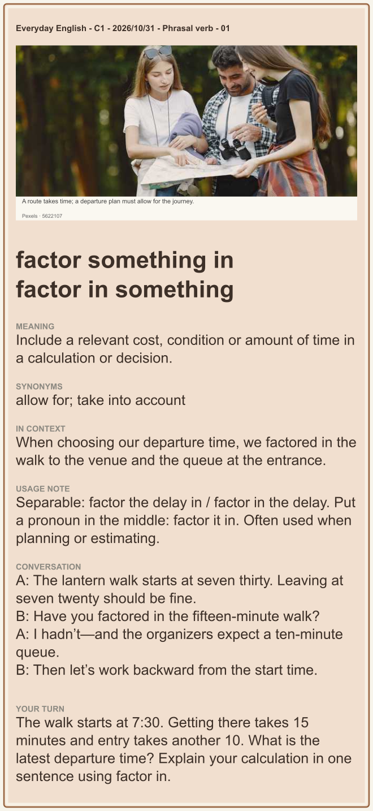
Reveal model answer
We should leave by 7:05 because we need to factor in both the fifteen-minute walk and the ten-minute queue.
Download PNG with model answer · Photo source
04 · Phrasal verb — iron out
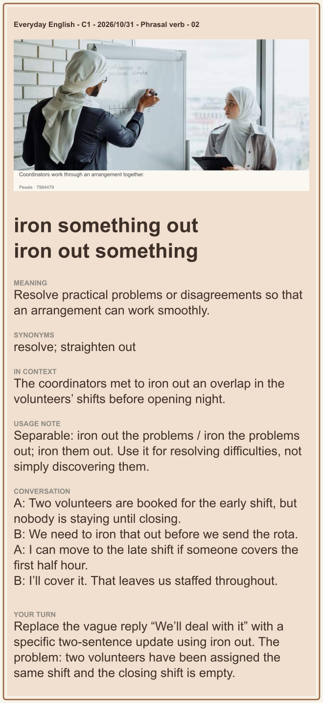
Reveal model answer
We’ve ironed out the overlap by moving one volunteer to the closing shift. The early team will cover the first half hour until the replacement arrives.
Download PNG with model answer · Photo source
05 · Idioms & slang — the devil is in the details
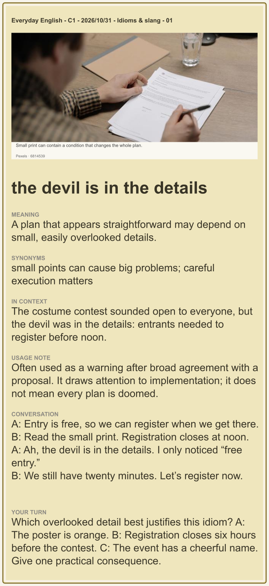
Reveal model answer
B. Someone arriving at the contest without registering earlier could be unable to enter, even though admission is free.
Download PNG with model answer · Photo source
06 · Idioms & slang — a double-edged sword
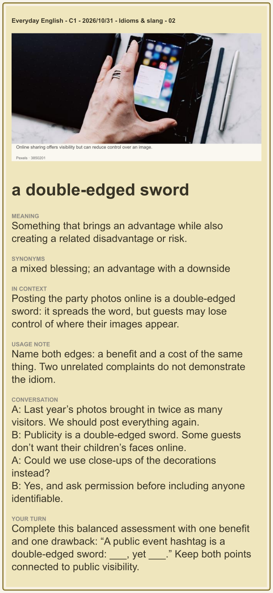
Reveal model answer
A public event hashtag is a double-edged sword: it helps people discover the event, yet it can expose participants’ photos to strangers.
Download PNG with model answer · Photo source
07 · Life phrases — I see your point, although I would qualify it slightly.
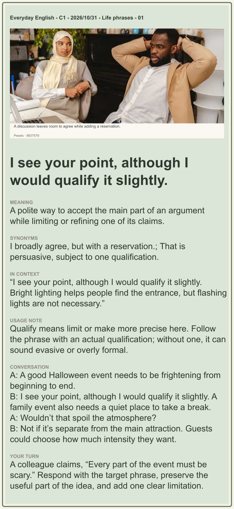
Reveal model answer
I see your point, although I would qualify it slightly. A spooky atmosphere suits the main attraction, but a quiet area would let guests step away when they need to.
Download PNG with model answer · Photo source
08 · Quote — Double, double toil and trouble;
Fire burn, and cauldron bubble.
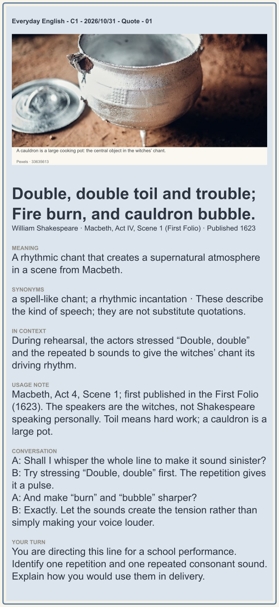
Reveal model answer
Repeat and stress “Double, double” to establish a pulse. Emphasize the b sound in “burn” and “bubble” to make the chant feel insistent and spell-like.
Download PNG with model answer · Photo source
09 · Grammar — Inversion after only then
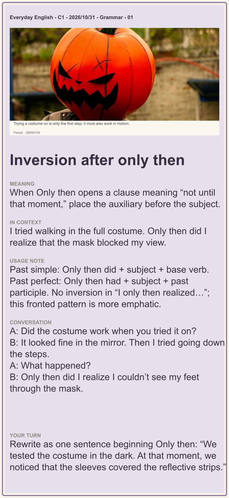
Reveal model answer
Only then did we notice that the sleeves covered the reflective strips. Use notice, not noticed, after did.
Download PNG with model answer · Photo source
10 · Small talk — What would you like to do for Halloween?
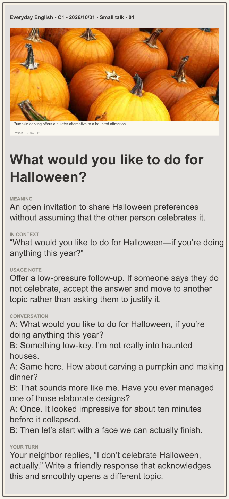
Reveal model answer
Of course. Are you doing anything nice this weekend instead?
Download PNG with model answer · Photo source
11 · Essay — A little room to choose
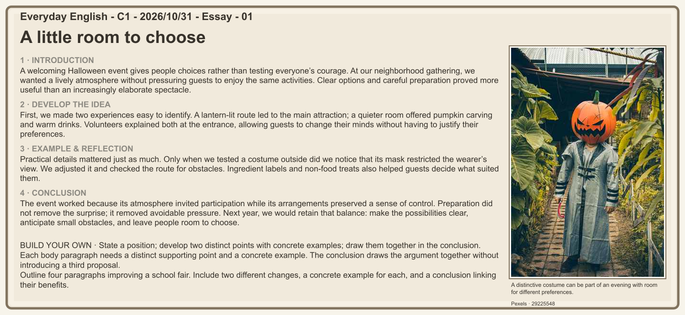
Reveal model answer
Introduction: a more welcoming fair. Body 1: clear signs at the entrance. Body 2: quiet seating away from the stage. Conclusion: better guidance and choice help guests enjoy themselves.
Download PNG with model answer · Photo source